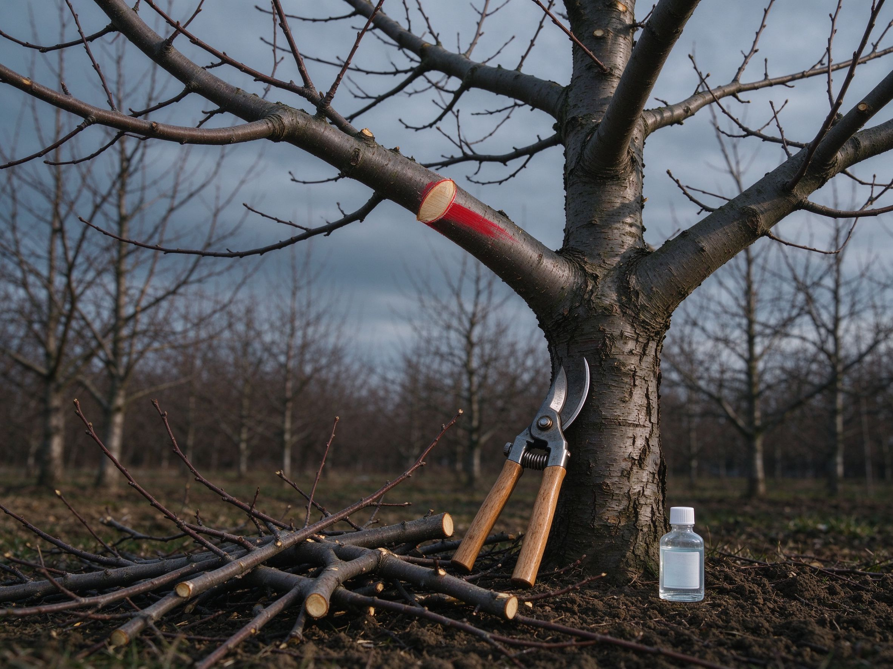

Winter Pruning Fruit Trees and Berries: The Cuts That Actually Matter
Most backyard fruit trees are pruned badly in two predictable ways: not at all, or far too hard in one January afternoon. Pruning isn't tidying — every cut redirects growth. In dormancy the tree has no leaves to tell you what you're doing, so you have to prune to a rule rather than to a look. Here are the rules, and the specific cuts for the fruits most people actually grow.
The Window
- Prune after leaf drop, before buds swell. Late winter — roughly January to early March in most temperate zones — is the safest window: wounds close as growth starts, and the structure is visible.
- Skip hard freezes. Wood below about −5 °C (23 °F) is brittle and cuts shatter. Wait for a milder day.
- Stone fruits are the exception. Plums, cherries, peaches and nectarines are best pruned in late spring or right after harvest; winter cuts invite silver leaf and bacterial canker in wet climates.
- Never prune a young tree in its first winter beyond removing dead or broken wood. You want roots and canopy built first.
Four Cuts, Four Jobs
- Removal (thinning) cut — take the whole branch back to a main limb or the trunk. This is the one that opens the tree up and lets light in. It doesn't stimulate much regrowth, which is why it's the workhorse.
- Heading cut — cut a branch back to a bud partway along. This makes the shoots below it branch and thicken — useful when you're building a young tree's framework, counterproductive on a mature tree you're trying to open.
- Renewal cut — remove old, low-vigour wood to force a fresh replacement shoot. Essential on mature trees and old berry canes.
- Cleaning cut — dead, diseased, damaged and crossing branches. Do this first on every tree; it's free information about what's left to work with.
How Much You Can Take
Remove no more than about 25–30% of the live canopy in one dormant season — and less on a stressed tree. Over-pruning pushes a flush of water shoots that shade the interior again and produces no fruit for two years. If the tree is badly overgrown, spread the work over three winters rather than one.
Apples and Pears
- Shape: either a central leader (one dominant upright trunk with well-spaced scaffold limbs) or an open centre (three to five limbs, hollow middle) — pick one and stay consistent.
- Spacing: aim for 45–60 cm between scaffold limbs up the trunk, so no limb competes directly with another.
- Fruit wood: don't butcher short spurs and stubby twigs along the branches — that's next year's crop, especially on tip-bearing apple varieties. Thin the whole branches that carry them instead.
- Uprights: remove the strong vertical shoots (water shoots) growing from the interior. They shade and never fruit well.
- Pears: same framework, but pears are slower and more upright — be patient and prune lighter.
Blueberries
- Flowers form on one-year-old wood, so the goal is a steady supply of young canes, not a heavy cut.
- Each winter remove the oldest, darkest, twiggy canes at ground level — two or three on a mature bush — and leave the vigorous young ones.
- Keep the bush open enough to see through it. Older interior wood goes first.
- Never hard-prune a blueberry back to stubs in one go; it regrows slowly and skips a year of fruit. More on growing them in the blueberry guide.
Raspberries and Blackberries
Canes are biennial, which makes them easy if you know which type you have:
- Summer-fruiting (floricane) raspberries: fruit on second-year canes. After fruiting, cut those canes to the ground; in winter, thin next year's young canes to about 10–12 cm apart and tip them back.
- Fall-fruiting (primocane) raspberries: fruit on first-year canes. In late winter, cut everything to the ground — the simplest prune in the garden. In cold zones, sacrifice the autumn crop on a few canes if you want a summer crop too.
- Blackberries: same biennial logic as summer raspberries — remove spent canes, tie the new ones in, and keep the row narrow enough to pick from both sides.
- Cut clean, at ground level. Stubs left above the soil rot and re-sprout.
Currants, Gooseberries and Grapes
- Currants and gooseberries fruit on two- and three-year-old spurs. Remove about a quarter of the oldest stems at the base each winter and shorten side shoots to a few buds, keeping a goblet shape.
- Grapes: prune hard — vines can lose 80–90% of last year's wood without harm. Cane pruning (keep two to four canes, cut back to a few buds) or spur pruning (cut every side shoot to two buds) depending on the system you started with.
Technique Details That Decide Success
- Sharpen first. A clean pair of bypass pruners cuts in one stroke; a dull one crushes the cambium and the wound heals badly. Bypass, not anvil, for live wood.
- Cut just outside the branch collar — the raised ring where branch meets trunk. Don't leave a stub, don't cut into the trunk.
- Angle the cut slightly away from the trunk, and on a heading cut finish just above an outward-facing bud.
- Support heavy limbs. A three-point cut (undercut, top cut, then remove the stub) stops bark tearing when a big limb comes down.
- Disinfect between trees if you have fire blight, canker or any suspect material — 70% alcohol on the blades. Not between branches of the same healthy tree.
- Don't paint wounds. Sealants trap moisture and interfere with the tree's own compartmentalisation. The exception is pruning paint on cuts in areas with serious fire blight pressure.
After the Cut
Nothing else is needed — no feeding, no watering, no wound dressing. If the tree is young, check stakes and ties before growth starts, and remove any tie that has started to girdle the trunk. Mulch can go down in spring, kept back from the trunk.
Pruning in dormancy is a fifteen-minute job per tree once you have a rule. Thin for light, remove what's dead or crossing, leave most of the fruit wood, and take less than your instinct says. The reward is a tree you can see through and fruit you can reach — which is most of what successful backyard growing actually is.